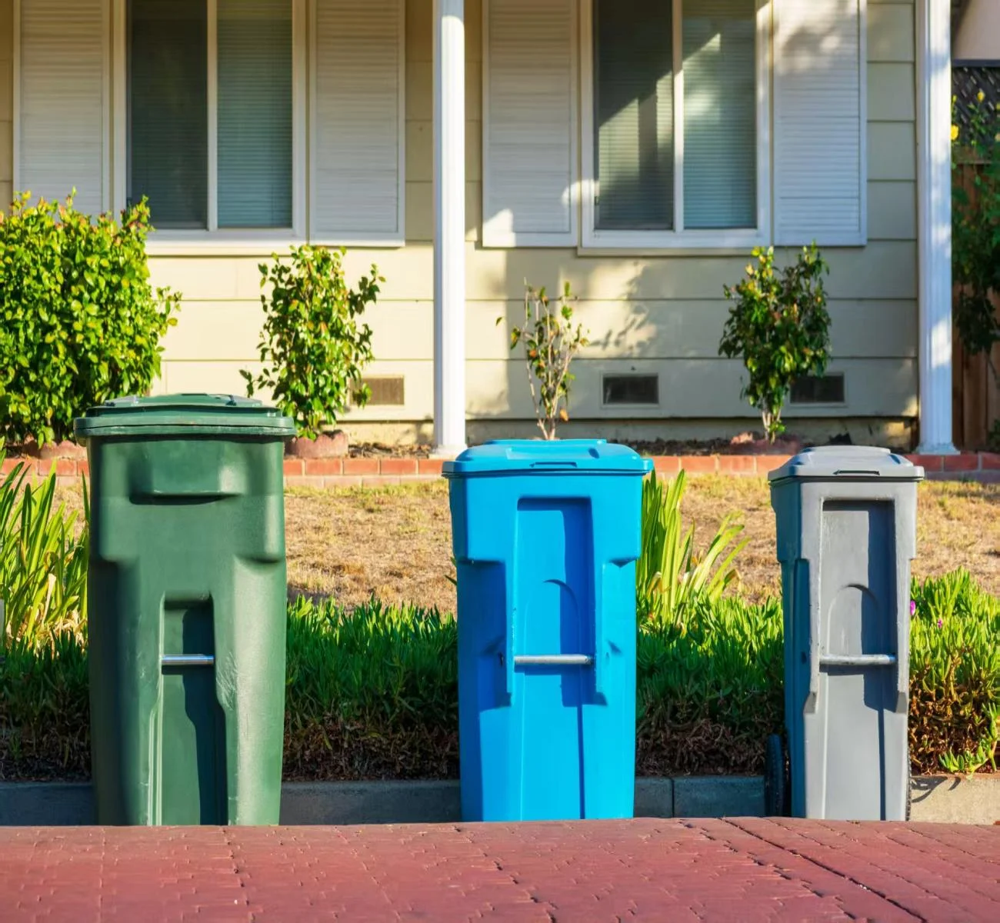
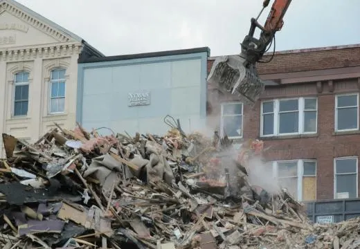
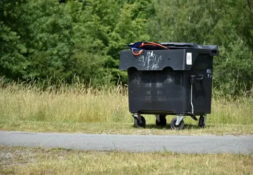
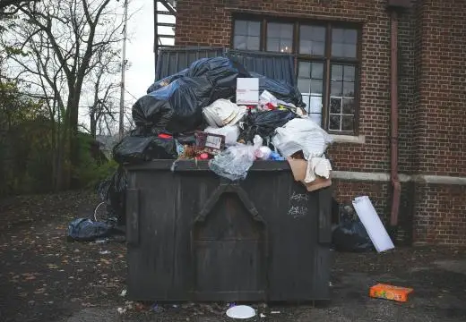
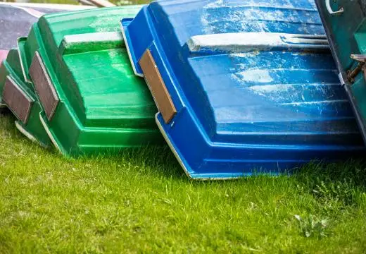
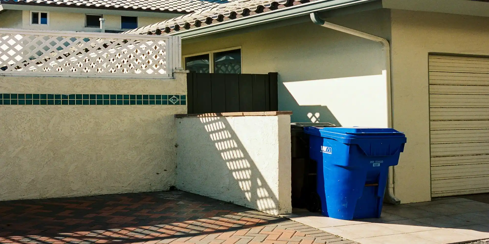
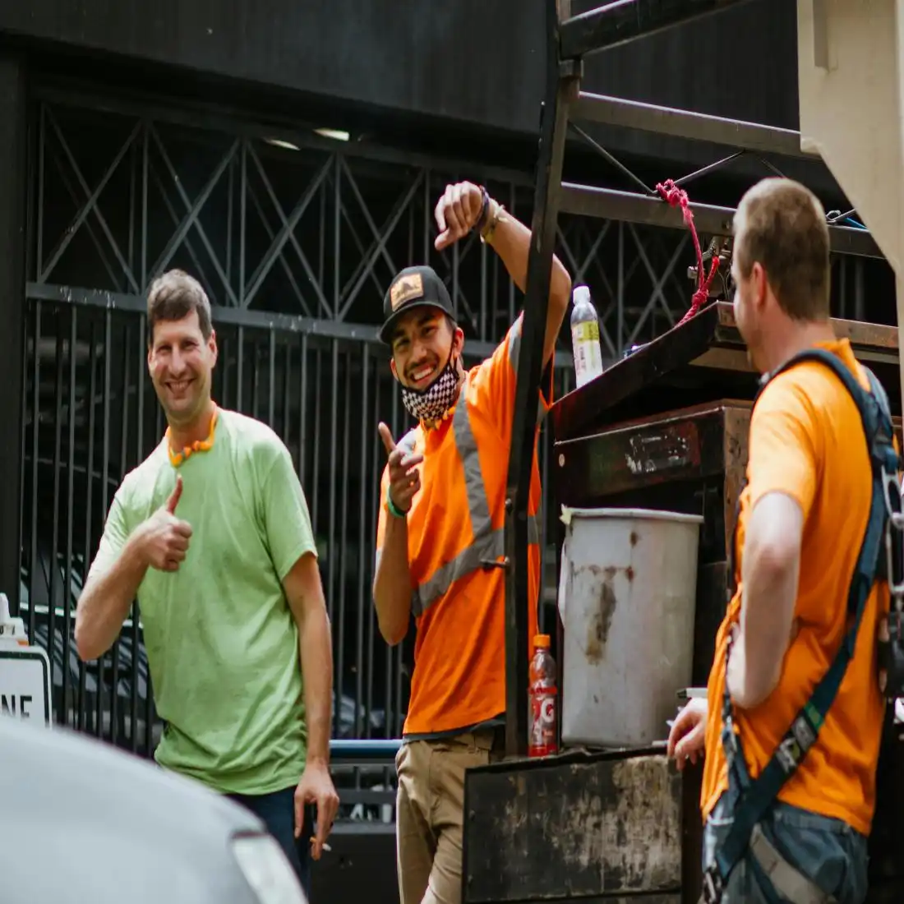

Fast Response
Same-day and next-day bookings available
We provide skip bin hire services for residential and commercial
customers in Wollongong, NSW, including household cleanups,
renovation waste, green waste, and construction debris removal.
If you need skip bin hire, our team can help you get the
right bin delivered to you.
Skip bin hire in Wollongong, NSW and surrounding suburbs

Same-day and next-day bookings available
Skip bins available from 2m³ to 12m³
No hidden fees or unnecessary upselling
Servicing 50+ suburbs across Illawarra
We provide skip bin hire services designed to make waste removal simple for any type of project, from small home cleanups to large construction jobs, we match you with the right bin size for your specific needs.

For renovation, demolition, and building site waste removal. Ideal when you are handling heavy mixed materials from construction or contractor projects that require fast and compliant disposal.

For garden cleanups, landscaping work, and organic waste disposal. Use this when clearing branches, soil, leaves, or managing outdoor maintenance projects.

For home cleanouts, decluttering, and general household waste removal. Ideal when moving house, cleaning garages, or getting rid of unwanted furniture and household items.

Compact skip bin for small cleanups and limited space jobs. Perfect for minor renovations, light waste removal, or areas where space is restricted.
Based in Wollongong, NSW, we support customers across the local area with convenient skip bin delivery and pickup. From residential suburbs to construction sites, we service homes, businesses, and job locations throughout Wollongong and nearby communities, making waste removal accessible wherever it is needed.

Wollongong and surrounding suburbs have a consistent demand for skip bin hire due to ongoing home renovations, garden maintenance, and construction activity across residential and commercial properties. This creates a need for a simple and accessible waste removal service that can support different types of projects locally.
We provide skip bin hire covering everything from household cleanups and renovations to landscaping work and construction site waste, with flexible bin options for different job sizes.
Our skip bin hire service is available across Wollongong and nearby suburbs, with coverage extending throughout the local region.
If you're in Wollongong or nearby suburbs, we're ready to help with your skip bin hire.

We focus on making skip bin hire and rubbish removal easier for homeowners, businesses, and construction projects across Wollongong. Instead of pushing one-size-fits-all solutions, we help customers choose the right option based on their waste type, project size, and budget. Our goal is to provide a straightforward service people can rely on for clear communication, practical advice, and consistent local support.
We help you choose the correct skip bin size based on your actual waste load.
Clear advice on what can and cannot go into each skip bin before booking.
We match the right skip bin to your project type so you don't overpay or run out of space.
Based on Wollongong regulations and disposal requirements to avoid issues.
We are a local skip bin hire service based in Wollongong, focused on making waste removal simple and accessible for both residential and commercial customers.
Our service covers a wide range of waste types, including household cleanups, renovation materials, garden waste, construction debris, and general commercial rubbish.
With experience working across Wollongong and surrounding suburbs, we understand the practical needs of local projects, from choosing the right bin size to ensuring timely delivery and pickup.
We're here to make waste removal simple for your next project in Wollongong.
Book Your Skip BinReal feedback from local homeowners, builders, and businesses across Wollongong
“We used their skip bin hire service during our home renovation in Wollongong. The bin arrived on time, pickup was easy, and the whole process was hassle-free.”— David & Lisa, Wollongong
“Booked a green waste skip bin for a big backyard cleanup. Great communication, affordable pricing, and the driver was very friendly.”— Mark, Shellharbour
“We needed a skip bin for construction waste on a small project site. Fast delivery and flexible hire options made everything much easier.”— Emily, Corrimal
Skip bin hire prices in Wollongong usually depend on the bin size, waste type, hire duration, and delivery location. Smaller bins for household cleanups are generally more affordable, while larger bins for renovation or construction waste cost more due to disposal fees and weight limits. Choosing the wrong bin size can increase costs if additional collections or replacements are needed. Our team helps customers choose the right skip bin size and waste category to avoid unnecessary expenses and improve waste removal efficiency.
The cheapest skip bin hire options are usually smaller bins used for light household waste, green waste, or garage cleanups. However, choosing the cheapest option without considering waste volume can lead to overloaded bins or extra hire costs later. Many property owners underestimate how much waste is produced during renovations and cleanups. We help customers find affordable skip bin solutions based on the project size, waste type, and required bin capacity.
The right skip bin size depends on the amount and type of waste being removed. Smaller bins are commonly used for garden waste, garage cleanups, and household rubbish, while larger bins are better suited for renovation debris, furniture removal, and construction materials. We provide 2m3, 3m3, 4m3, 5m3, 6m3, 8m3, 10m3, and 12m3 skip bins for different residential and commercial projects across Wollongong. Choosing the wrong size can lead to overflow issues or unnecessary extra costs, so our team can help you select the most suitable skip bin for your cleanup or renovation project.
Skip bins in Wollongong are commonly used for household waste, renovation materials, green waste, furniture, and construction debris. However, hazardous chemicals, asbestos, batteries, and liquids are usually prohibited due to environmental and safety regulations. Incorrect disposal can create contamination risks and additional fees. We help customers understand which waste types are accepted and ensure rubbish is handled according to local recycling and disposal requirements.
Managing large amounts of waste without a proper disposal solution can create safety hazards, clutter, and unnecessary transport costs. During renovations, landscaping projects, or commercial cleanups, waste can quickly accumulate and slow down progress. We provide reliable skip bin delivery, safe waste containment, and efficient rubbish collection to help keep homes, businesses, and worksites clean and organised throughout the project.
Receive a fast response with upfront pricing and no hidden fees.